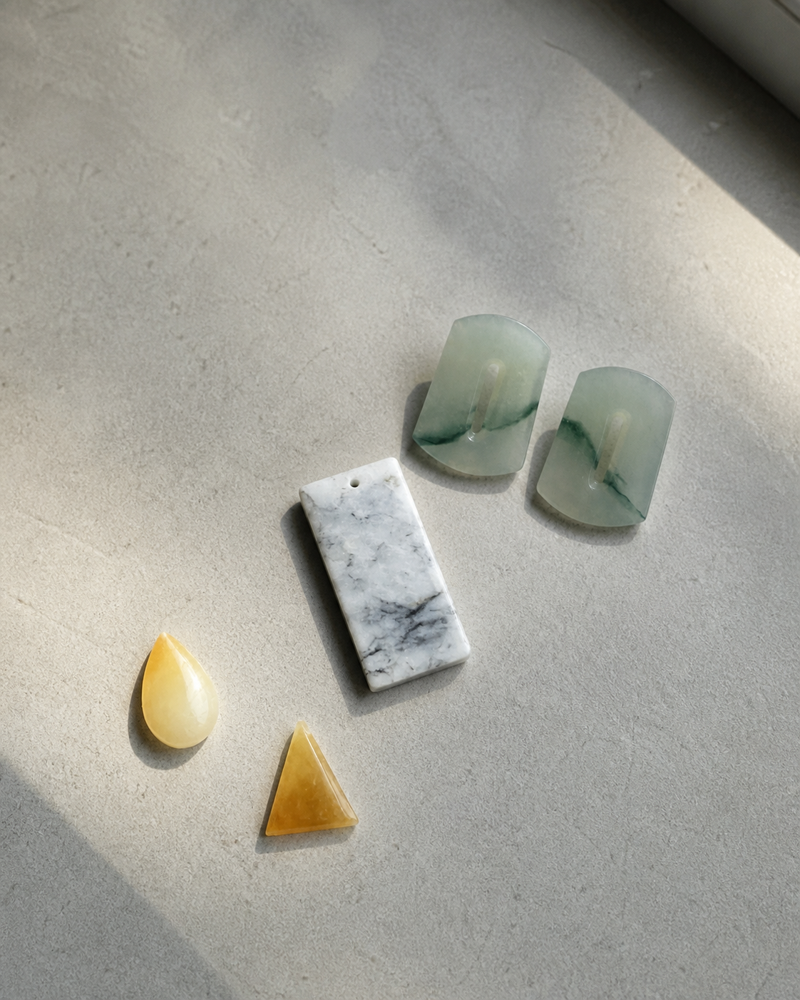
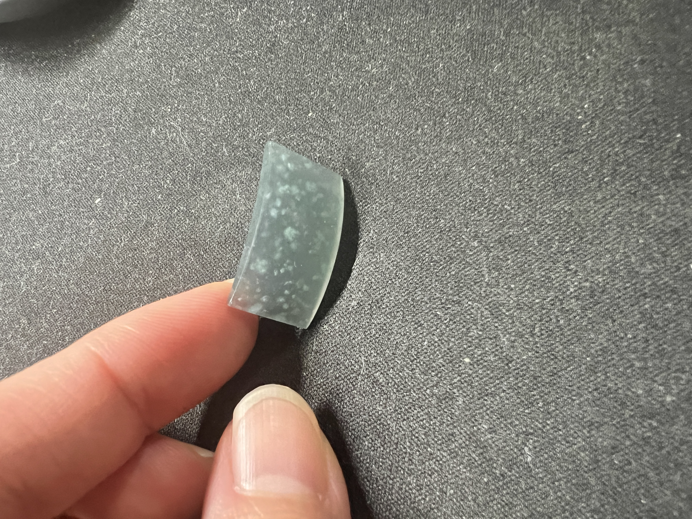
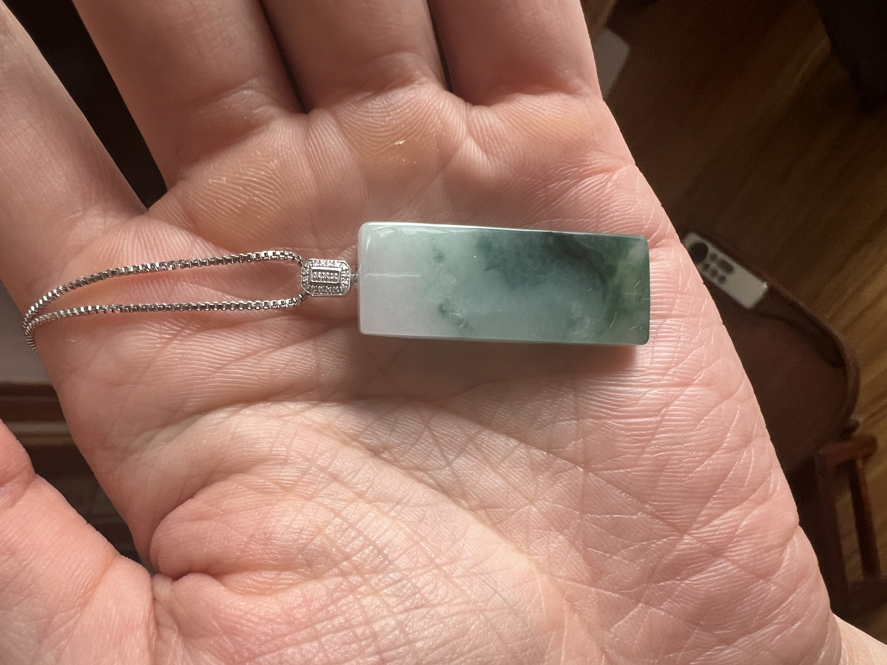
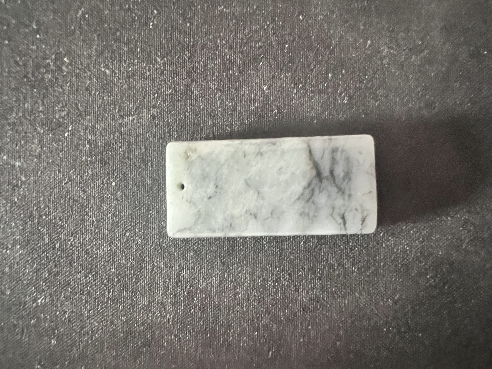
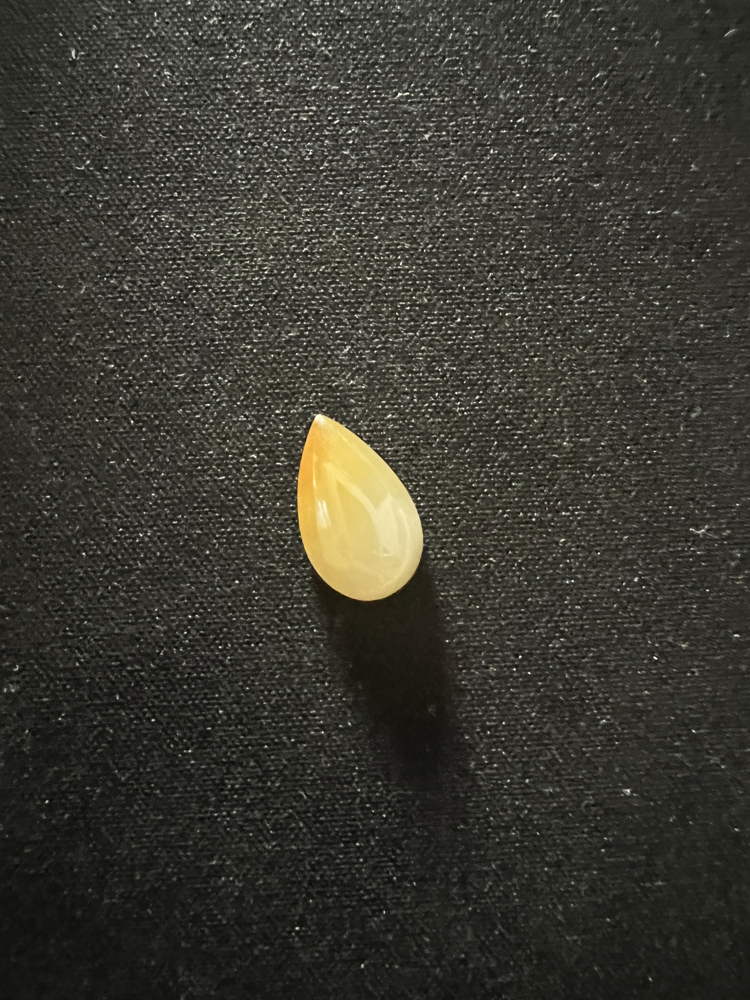
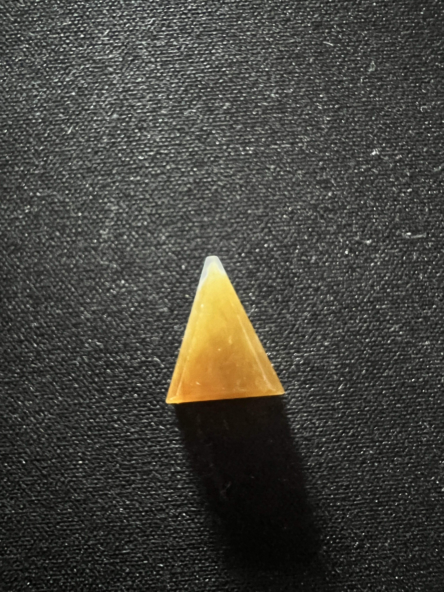
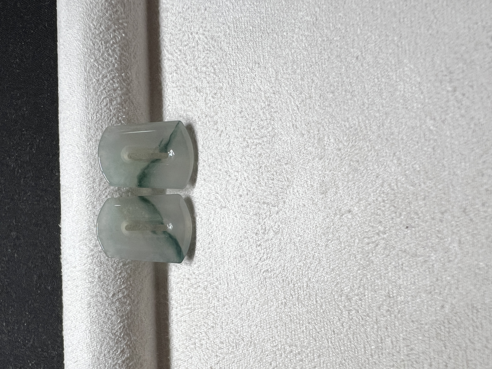
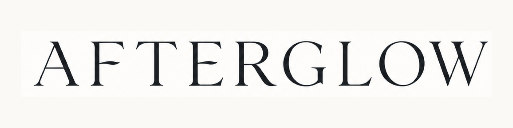

No two alike.
Just like us.
我們都是獨一無二的，
翡翠亦然

Not a single crystal,
but countless crystals
interlocked as one.
翡翠並非一顆晶體，
而是無數微細晶體交織相聚，
方成一翠。

We are formed
in much the same way.
By every encounter,
every memory,
every experience.
人亦如是。
萬般相遇與經歷，
慢慢成為今天的我們。



We do not chase perfection.
We honour character.
我們不追求無瑕的完美，
而是珍視每一件翡翠
由結構、色澤、紋理與光
共同形成的個性。
依玉而設計，
不讓玉遷就款式。

Countless crystals. One jade.
Countless moments. One self.
萬晶成翠，萬歷成我。
